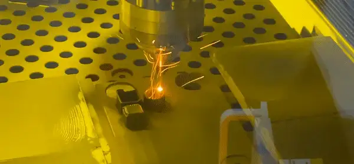

AI-driven manufacturing · Multi-material metal components


Xiao Shang
Postdoctoral Researcher, Massachusetts Institute of Technology
Mechanosynthesis Group (MechE) & Gas Turbine Laboratory (AeroAstro)
I want AI-designed materials and parts to be not only high-performing but also manufacturable, so that their benefits reach industry.
On the 2026–27 academic job market: tenure-track faculty positions